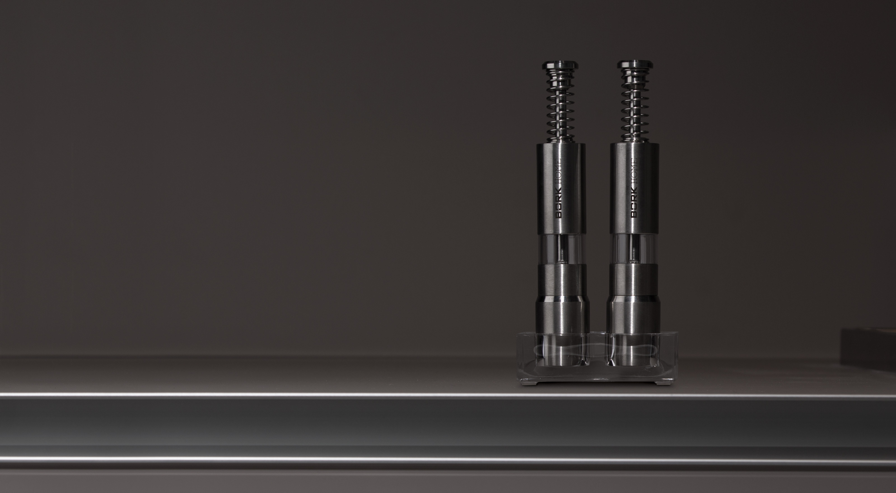

Набор для специй BORK HM501
Только истинные гурманы способны понять разницу между уже измельченными специями, сложенными в упаковку, и свежемолотым вариантом, который обладает насыщенным вкусом и душистым ароматом. Если Вы хотите наслаждается изысканным вкусом блюд каждый раз, а не лишь тогда, когда упаковка со специями только что вскрыта, Мельница для специй позволяет в считанные секунды перевести перец горошком в разряд молотого, а также помолоть кристаллы соли или семена гвоздики.
История мельницы для специй

В древности пряности не мололи, а толкли в ступке при помощи пестика.
В 1842 году братья Пежо создают первый механизм для ручной мельницы.
Размалывающий механизм мельницы имел канавки двух размеров: более крупные канавки просто давят горошины перца, а более мелкие – доводят помол до нужного размера. Этот принцип до сих пор используется в мельницах для специй.
Ручная мельница для специй – это выбор настоящих гурманов. Принцип работы такого прибора предельно прост. В емкость закладываются различные виды перца, затем с помощью нажатия на поршень приводится в движение жернова и происходит измельчение специй.

Набор для специй BORK HM 501 имеет корпус из нержавеющей стали 15,5 см. высотой и прозрачной деталью из пищевого акрилового стекла для видимости уровня специй.
Мельница с удобным одноручным пружинным механизмом, отличается эргономичностью, а также элегантным и современным дизайном.
Использование аксессуара не требует особенных усилий, достаточно просто нажать на кнопку, чтобы свежемолотые соль или перец наполнили Ваше блюдо ярким вкусом и ароматом специй.
Акриловая подставка на ножках предотвращает скольжение аксессуара по поверхности.